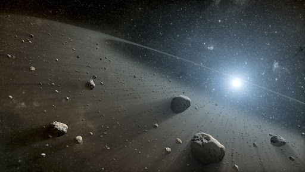
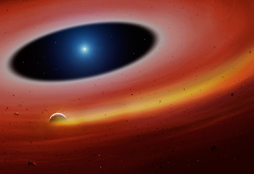

About Me

Education: I got my International Baccalaureate at the United World College of the Atlantic in Wales (UK) before moving to the University of Warwick (UK) where I did an integrated Master degree in physics and got my PhD in Astronomy.
Research Interests: White dwarfs (those tiny old stars), evolved planetary systems (very old, pretty much just
dust), large area surveys (stuff like Gaia...Gaia is great)
Publications: You can find the full list of my peer-reviewed publications here: ADS library
Other Interests: Films, Table top gaming and martial arts!
Research

White Dwarfs in the era of Gaia
Nearly all the stars in the Galaxy share the same final fate: one day they will become white dwarfs. Despite this somewhat negative connotation as dead stars, white dwarfs are actually extremely important objects of study with many key scientific applications. These ancient stars are, however, small and faint, and for decades their observation has been a challenging task. That's where the ESA mission Gaia and I come in.
Using data from Gaia, I am tryig to identify all the white dwarfs in our Galactic neighbourhood. I have already created the largest and most complete white dwarf catalogue to date and in just 3 years I discovered 10 times more white dwarfs that had been found in the previous 50!
White dwarfs, dust, discs and debris
When did planets first form? What are the planets around distant stars made of? How common or rare are planets like the Earth? What happens to planets once their host star reaches the end of ist life? What is the destiny of the Earth? Some rare white dwarfs still host the remnants of their planetary systems and hold the answers to these critical questions. My research focuses on identifying and characterizing these objects in order to build a better understanding of planets beyond our Solar System.
Conference Talks

Invited:
Summer workshop on white dwarfs and related objects, University of Warwick (UK) -- July, 2021
KITP online conference: White Dwarfs from Physics to Astrophysics -- March, 2021
Seminar OA Trieste (Italy) --June, 2020
Contributed:
Contact
Email: ngentile@eso.org
Address: Karl-Schwarzschild-Straße 2, 85748 Garching bei München